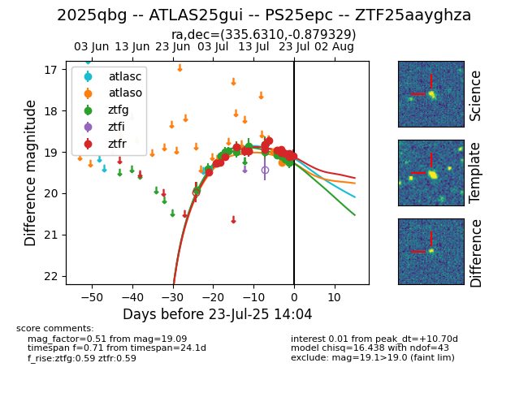

Target ZTF25aayghza at 2025-07-23 14:04, see:
FINK: fink-portal.org/ZTF25aayghza
Lasair: lasair-ztf.lsst.ac.uk/objects/ZTF25aayghza
ALeRCE: alerce.online/object/ZTF25aayghza
TNS: wis-tns.org/object/2025qbg
YSE: ziggy.ucolick.org/yse/transient_detail/2025qbg
alt names
ZTF25aayghza (ztf,fink)
2025qbg (tns,yse)
ATLAS25gui (atlas)
PS25epc (panstarrs)
coordinates:
equatorial (ra, dec) = (335.6310,-0.87933)
galactic (l, b) = (62.9400,-45.68818)
photometry
last atlasc=19.41, atlaso=19.25, ztfg=19.26, ztfr=19.09
1 atlasc, 3 atlaso, 23 ztfg, 18 ztfr detections
